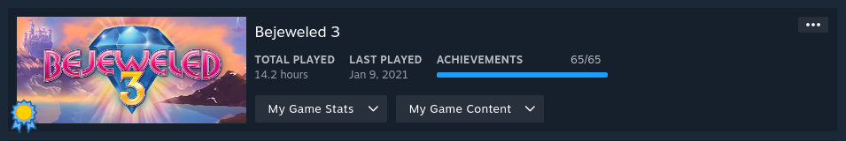

Why Bejeweled 3?
Growing up with PopCap games, it was hard to not be aware they all existed. Bewjeweled was never a game that I was excited to play, but it happened to be on the family computer because my grandparents liked it. My grandpa probably still plays to this day. The only reason I have an affinity for this game is because of PopCap, which was one of my favourite game developers as a child. Even after they were bought out by EA, I played their mobile version of the game until it became overloaded with microtransactions.
First Impressions
If you've played any PopCap game, you'll be used to the screen you're met with. When you launch the game, you have the iconic loading screen, some character asking you your name, and a handful of menus to jump into the game. In classic PopCap fashion, there's the adventure mode, challenge mode, time trial mode, and high scores. Jumping into the game, it's a match three game based on gems, naturally.
Finding Footing
You get a real sense that nothing you do matters, and everything is random. It makes it feel like this is a game that you're going to beat not by skill, but overtime through brute force. I can tell that there might be some skill involved, but I'm not quite sure how to achieve that yet.
Diving In
After beating the game, I can say that it was all random, with some minor inklings of skill. If you look at the screen long enough, you can find combos to get a higher score, or complete the level faster, but it's slim. The real skill comes into play when you start doing the challenges, but even those feel random.
Final Thoughts
I don't have much to say. When I was a kid, it was worth the price. Even now that it's heavily discounted, it's worth the price. However, it's nothing compelling. It was a neat little look back at how computer games used to be.
Completion Record
It's easy enough to complete if you can put up with the random elements. The random isn't fun like a game like Peggle is, the randomness makes winning feel unearned, and losing feel unfair. Completing this game was quick, but felt like a waste of time. I did it mostly because I have this desire to complete everything I touch, but you can leave this one at beaten.
Stats Gallery
Complete!
